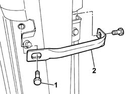
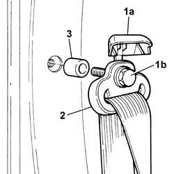
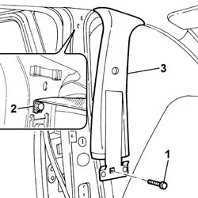
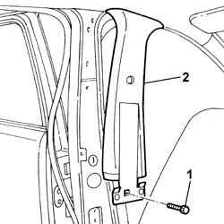
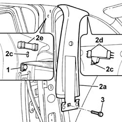
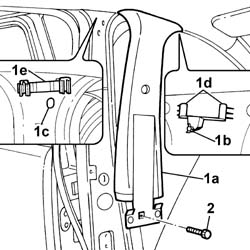

7040H38 central pillar upper element - r r
- Path
- Procedures > 70 FITTINGS > 7040 BODYSHELL INTERIOR TRIMS AND FITTINGS > 7040H roof panel lining > 7040H38 central pillar upper element - r r
- Kind
- repair procedure (removal / refitting; the operation number is the code)
- Applies to
- all engines; all production periods
- Interactive page
- https://sloeber94.github.io/elrnDB-fPnd/en/#/2753209
Applies to: all engines; all production periods
 Removing
Removing
 Refitting
Refitting7040L42 sill plate connection of one front door (1), lh or rh - r r
Applies to: all engines; all production periods; only with equipment: Head Bag
Applies to: all engines; all production periods; only with equipment: Head Bag
1. Undo the retaining bolts.
2. Remve the seat belt tension bridge.

Applies to: all engines; all production periods; only with equipment: Head Bag
1. Open the guard (1a) and undo the fixing bolt (1b).
2. Release the upper section from the seat belt and place it on the ground.
3. Recover the spacer.

Applies to: all engines; all production periods; only with equipment: Head Bag
Release the front and rear door housing seals as necessary in order to be able to release the centre pillar trim upper element.
Applies to: all engines; all production periods; only with equipment: Head Bag
1. Undo the lower fixing bolt.
Release the centre pillar trim upper element.
2. Undo the bolt fixing the safety mounting.
3. Remove the centre pillar upper element.

Applies to: all engines; all production periods; only with equipment: Head Bag
1. Undo the lower fixing bolt.
2. Release the centre pillar trim upper element and remove it.

Applies to: all engines; all production periods; only with equipment: Head Bag
Refitting
Removing1. Tighten the bolt fixing the safety mounting.
2. Place the centre pillar trim upper element (2a) in position fitting the pin (2b) in the special opening (2c) and the tabs (2d) in the special clips (2e).
3. Tighten the lower bolt.

Applies to: all engines; all production periods; only with equipment: Head Bag
1. Place the centre pillar trim upper element (1a) in position fitting the pin (1b) in the special opening (1c) and the tabs (1d) in the special clips (1e).
2. Tighten the lower bolt.

Applies to: all engines; all production periods; only with equipment: Head Bag
Fit the front and rear door housing seals in place.
Place the upper section of the seat belt and the spacer in position.
Tighten the fixing bolt to the recommended torque and close the guard.
 | Fastening | Component | Ø | Value (daNm) |
|---|---|---|---|---|
- | Bolt | FRONT SEAT BELT | M7/16' | 4.0 |
Place the seat belt tension bridge in position and tighten the fixing bolts.
7040H36 central trim lower element - r r
7040L40 front compartment scuff strip - r r
7040L42 sill plate connection of one front door (1), lh or rh - r r
Topics linked from this page (3)
- 7040H36 central trim lower element - r r
- 7040L40 front compartment scuff strip - r r
- 7040L42 sill plate connection of one front door (1), lh or rh - r r
Topics that link to this page (11)
- 5505A90 rear wiring bundle - r r or replace
- 5570T20 radio aerial amplifier - r r
- 5580C50 (HEAD- BAG MODULE ) (one), left or right - R.R.
- 7015A24 tailgate hinges - repair or replace with tailgate removed
- 7030B24 sliding roof blind,front or rear - r r
- 7030B47 GUIDE device for sliding roof movement control cables - R.R .
- 7030B50 sun roof guide , one , lh or rh - r r
- 7030B70 sun-roof control switch - r+r
- 7030B74 sun-roof wiring harness - r r or replace
- 7040H10 roof panel lining - r r
- 7040H16 roof panel lining - r r